Lecture IX - Data Visualization
Programming with Python
Kühne Logistics University Hamburg - Fall 2026
EP 9: The Pitch Deck
Charts are arguments
Friday, the boardroom. Picture it: the investor slides a pencil out of her jacket and sharpens it while you set up, the sound louder than it has any right to be.
Last week you handed her a table she could trust. She read exactly one row, looked up, and said the thing this whole session is about:
“Tables are homework. Charts are arguments.”
Your agent draws any chart in five seconds, so drawing is no longer the hard part. Today: which chart to draw, what it should say, and in which order you show the charts.
One download first
On a Mac? Open a terminal now and type:
A window offers to install the command line developer tools? Click Install and let it run while we talk. It’s a big download, and you need git before today’s lab.
On Windows, or a version number came back? Nothing to do yet.
Warm-up
Question 1
Three questions from Episode 8. Commit. Hands up before the reveal.
returns…
a) a True/False column
b) only the Nord rows
c) an error from comparing text
Answer 1
| order_id | zone | items | total_eur | |
|---|---|---|---|---|
| 0 | 101 | Nord | 2 | 18.5 |
| 2 | 103 | Nord | 3 | 24.0 |
b) only the Nord rows: the True/False column is what the inner expression orders["zone"] == "Nord" makes. Wrapped in orders[...], that mask keeps the rows where it’s True and drops the rest.
Question 2
returns…
a) one row per order, with its zone
b) one total for all orders
c) one total per zone
Answer 2
zone
Hafen 6.8
Nord 42.5
Sued 38.6
Name: total_eur, dtype: float64c) one total per zone: groupby splits the orders by zone, .sum() adds up each group. Today this table sits behind every bar chart: the bars have to match it.
Question 3
shows…
a) the first five rows of the column, like .head()
b) count / mean / std / min / quartiles / max
c) the column’s dtype, like .dtypes
Answer 3
count 5.000000
mean 17.580000
std 10.688873
min 6.800000
25% 7.200000
50% 18.500000
75% 24.000000
max 31.400000
Name: total_eur, dtype: float64b) count / mean / std / min / quartiles / max. One line, the column’s whole statistical fingerprint.
Ugly, bad, wrong
Your agent draws, you judge
Ask your agent for a bar chart of revenue per dish:
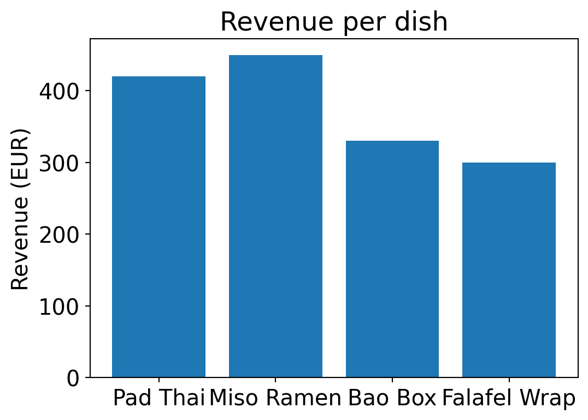
Read the code, don’t memorize it. Your job: judge the picture. Here, the names already collide.
Ugly, bad, wrong
Problem charts get one of three verdicts (Wilke 2019, ch. 1):
- Ugly: clear and correct, but unpleasant to look at
- Bad: the numbers are right, but the picture is unclear, confusing, overloaded or deceiving
- Wrong: the numbers in the picture are not the data
Fix wrong first, then bad. Ugly comes last: a correct, clear chart in default colors already does its job.
Predict: which chart is wrong?
Three drafts from Tobi’s agent. Exactly one is wrong:
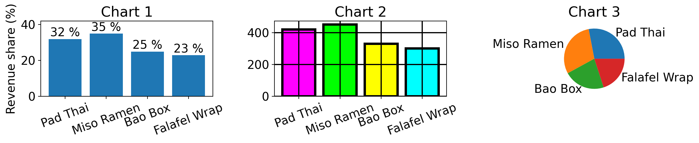
a) chart 1
b) chart 2
c) chart 3
Answer: chart 1 adds up to 115 %
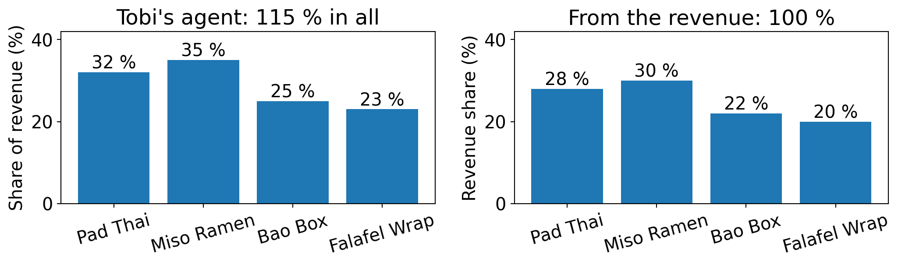
a) chart 1: shares of one whole add up to 100 %, and these add up to 115 %. That’s wrong. Chart 2 is ugly: loud, but you can read every number. Chart 3 is bad for this question: correct, but nobody can tell which slice is biggest.
The title is a claim
A title states the point (Wilke 2019, ch. 22):
| Describes the chart | States the point |
|---|---|
| Revenue per dish | Miso Ramen sells best: 450 euros |
| Delivery times | Most deliveries take 20-30 minutes |
| Order value vs. delivery time | Big orders don’t take longer |
- Write the claim before you draw. If you can’t, the chart has no point yet.
- Every axis names what it measures, with the unit: Revenue (EUR).
Your turn
Open the exercise
Scan the QR or type the link:
python.tobiasvlcek.com/notebooks/ex_09_a/
Any questions? Let me know!
Question first
MunchCorp’s one pie
The one chart in MunchCorp’s press release from Episode 8:
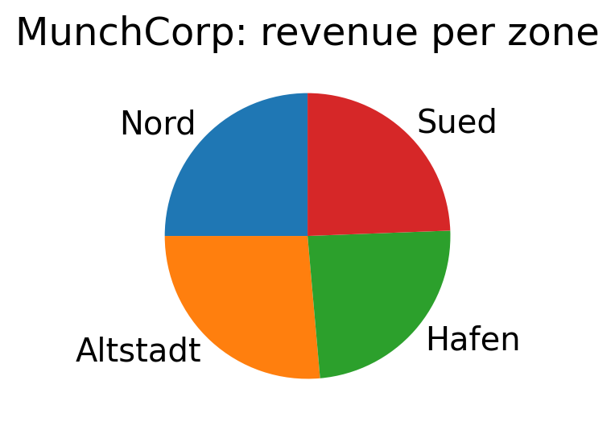
Which zone brings MunchCorp the most?
a) Nord, top left
b) Hafen, bottom right
c) Altstadt, bottom left
Answer: Altstadt, by 1.4 points
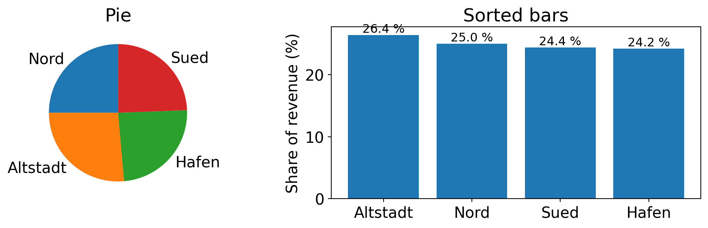
c) Altstadt: 26.4 % against Nord’s 25.0 %. The eye compares lengths well and areas badly. The sorted bars answer in a second; the pie starts an argument.
Match the chart to the question
| The question | The basic chart |
|---|---|
| How much per category? | bar, sorted |
| How are values spread? | histogram |
| What share of the whole? | pie, for halves and quarters |
| Do two numbers move together? | scatter |
| How does it change over time? | line |
| Where, and how sure? | map, error bars |
A quick tour of each family (Wilke 2019, ch. 5):
Amounts: how much?
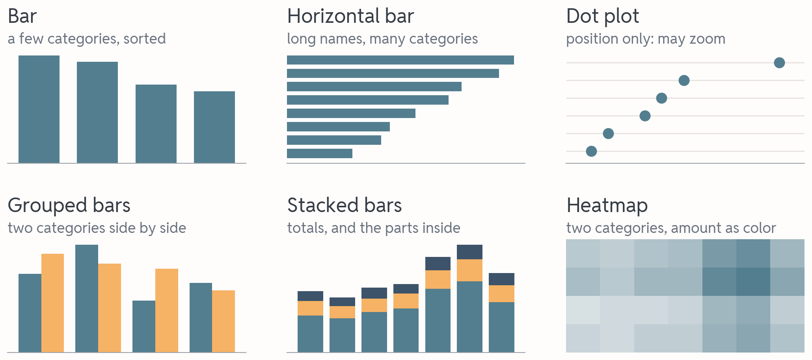
Bars start at 0, a dot may zoom: the next block says why.
Distributions: how spread out?
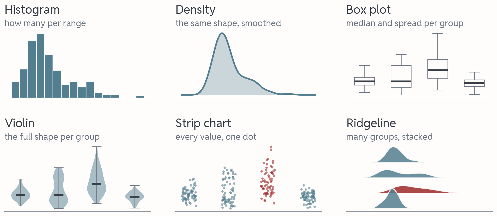
Also in the directory: cumulative densities, q-q and sina plots.
Proportions: what share?
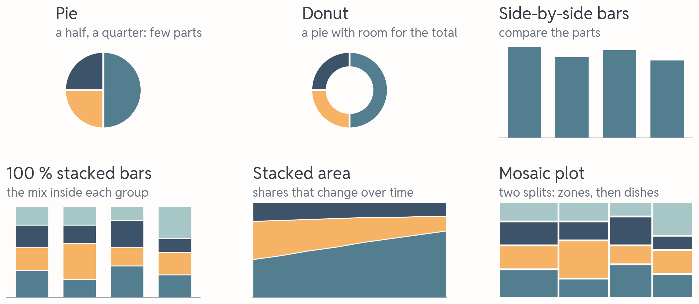
Also in the directory: treemaps, parallel sets, nested pies.
Relationships: two numbers

A shapeless cloud is a finding too: it goes in the title like any claim.
Time series: change over time
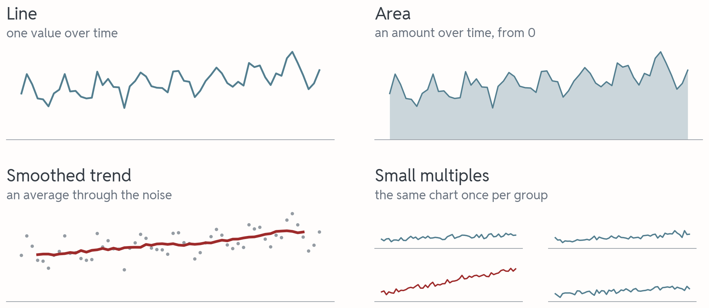
Many lines? One accent, the rest grey. More after the break.
Maps and uncertainty
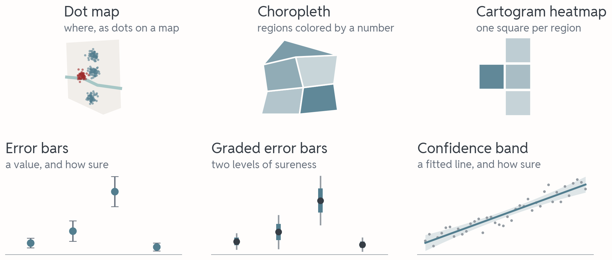
Also in the directory: cartograms, eyes plots, quantile dots.
Predict: how many bars?
The same four numbers, two ways. On the left, a bar per number; on the right, a histogram:
The bar chart shows 4 bars. How many bars does the histogram show?
a) 4: one bar per number
b) 15: one bar per unit up to the max
c) 3: one bar per range
Answer: three ranges, three bars
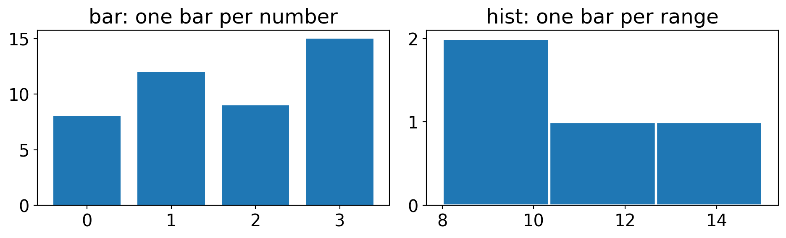
c) 3: 8 and 9 share the first range, so that bar is 2 tall. A bar chart shows one bar per category, as tall as its value. A histogram shows one bar per range, as tall as the number of values in it.
Your turn
Open the exercise
Scan the QR or type the link:
python.tobiasvlcek.com/notebooks/ex_09_b/
Any questions? Let me know!
Proportional ink
Predict: how many times more?
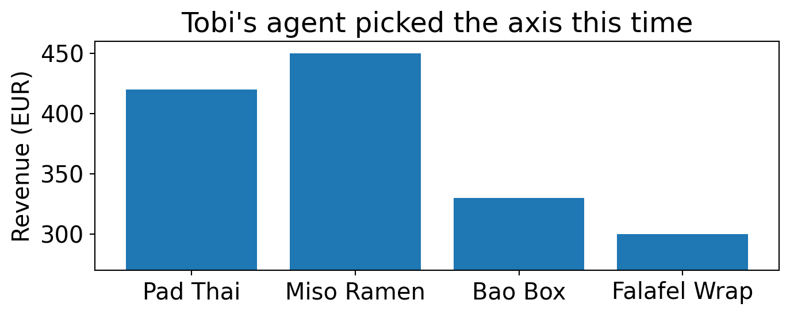
Miso Ramen vs. Falafel Wrap: how many times as much?
a) about 1.5 times
b) about 3 times
c) about 6 times
Answer: 1.5 times, drawn as 6
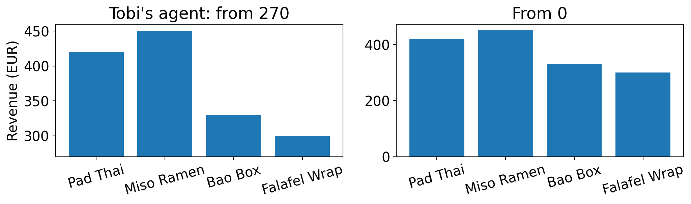
a) about 1.5 times: 450 against 300. Cut at 270, the bars keep 180 and 30 of their length, so the picture says 6 times. That’s bad: the numbers are right, the picture misleads. The rule behind it is proportional ink: the ink for a value has to grow with the value (Wilke 2019, ch. 17).
Predict: the AI’s one extra line
Revenue [710, 718, 724, 731], up 3 % over four weeks. Tobi’s AI drafts the chart and adds one line:
What does the room see?
a) a flat line: 3 % stays 3 % on any axis
b) an error: ylim has to include zero on a line chart
c) a line rising across most of the chart
Answer: a climb across the chart
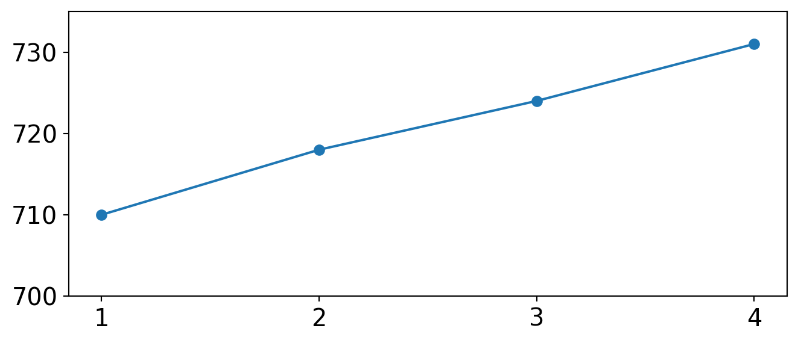
c) a line rising across most of the chart: the axis spans 35 units and the line rises 21 of them, 60 % of the picture for 3 % of growth. Python raises no error.
Bars from zero, dots may zoom
- A bar shows its number by its length: cut the axis and the comparison breaks. Bars always start at 0.
- A dot shows its number by position only, so a dot plot may zoom (Wilke 2019, ch. 17).
- A line sits in between: zooming blows a small change up. Plot the change from 0, or put its size in the title: “+3 % in four weeks”.
The investor reads the axis before the line, and then the title, to see if the two agree.
Your turn
Open the exercise
Scan the QR or type the link:
python.tobiasvlcek.com/notebooks/ex_09_c/
Any questions? Let me know!
A five-minute pause after this one, then three charts, made over step by step.
Make one point
Makeover 1: who is fastest?
“Are you faster than the rivals?” First: who was fastest in week 1?
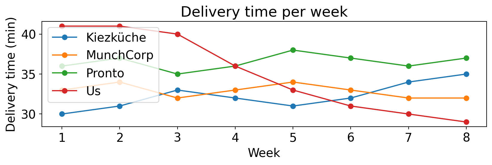
a) MunchCorp
b) Kiezküche
c) Pronto
Answer: Kiezküche, the slow way
b) Kiezküche: 30 minutes in week 1. An easy number, found the slow way: you matched four colors to a legend sorted from A to Z. And her real question, whether we got faster, is buried even deeper.
The data is fine. The chart is bad: the point is in there, buried. Four changes dig it out, one at a time, and none of them touches the numbers.
Lines, step 1: one accent color
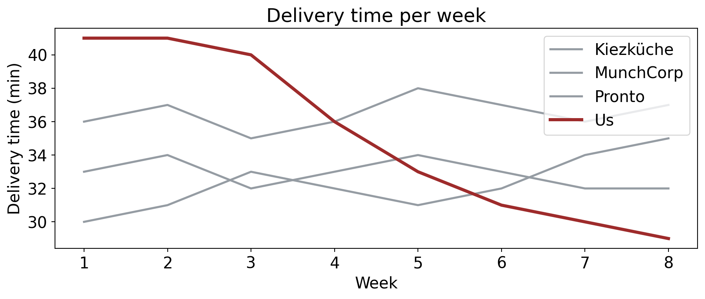
Take the color out of everything except the point (Wilke 2019, ch. 4). One color= per line, and the eye knows where to go.
Lines, step 2: labels, no legend
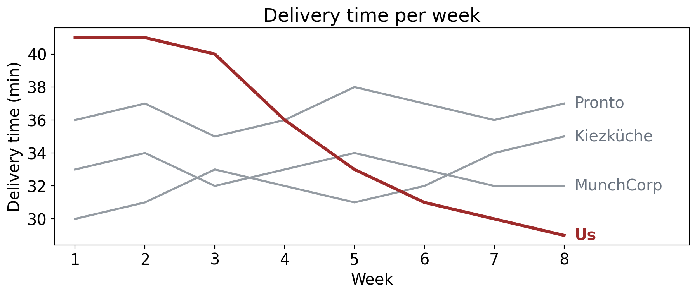
Names at the lines replace the legend, and they work for the 8 % of men who can’t tell red from green (Wilke 2019, ch. 19).
Lines, step 3: the title says it
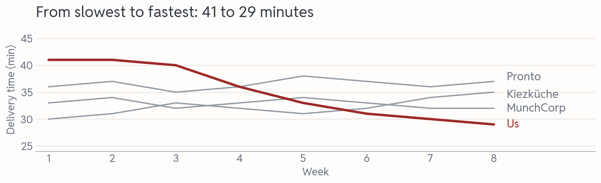
The title states the claim; frame and tick marks are gone. Same numbers, and every change was a decision.
Lines, step 4: add the context
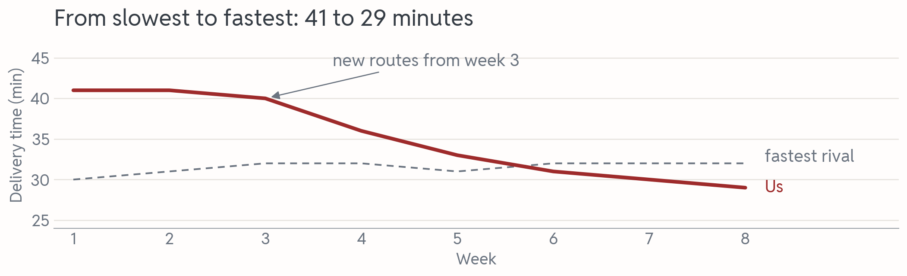
The rivals only matter as a yardstick: one dashed line for the fastest rival replaces three, and one note marks week 3. Now the chart tells a story.
Lines, step 5: one too many
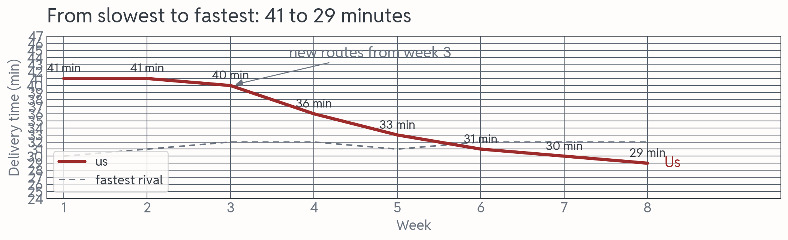
Every number, line and box here is true, and none of them helps: the point drowns. Balance data and context (Wilke 2019, ch. 23): stop at step 4.
Makeover 2: what misleads?
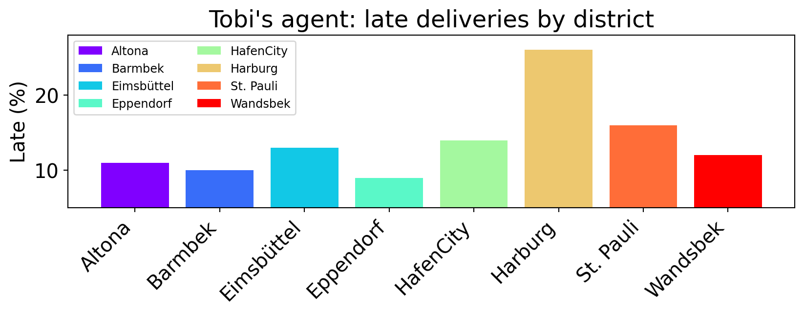
Which problem makes the investor believe something false?
a) the loud colors
b) the axis from 5 %
c) the tilted names
Bars, step 1: from zero
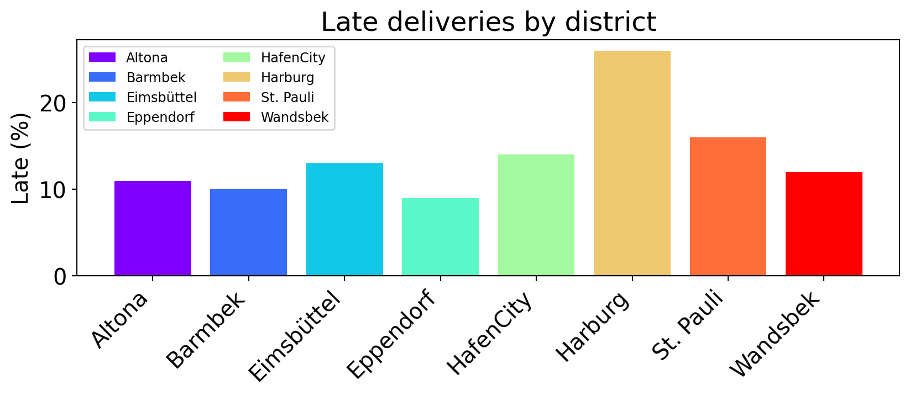
b) the axis. Cut at 5 %, Harburg looked five times as late as Eppendorf; from 0 it is three times. The colors and the tilt only make the chart harder to read. Fix what misleads first.
Bars, step 2: sorted, lying down
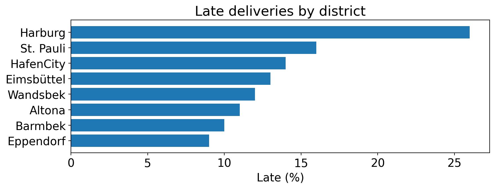
Sorted, the ranking reads from top to bottom. Lying down, the names need no tilt. The colors meant nothing, so one color is enough, and the legend goes with them.
Bars, step 3: one point
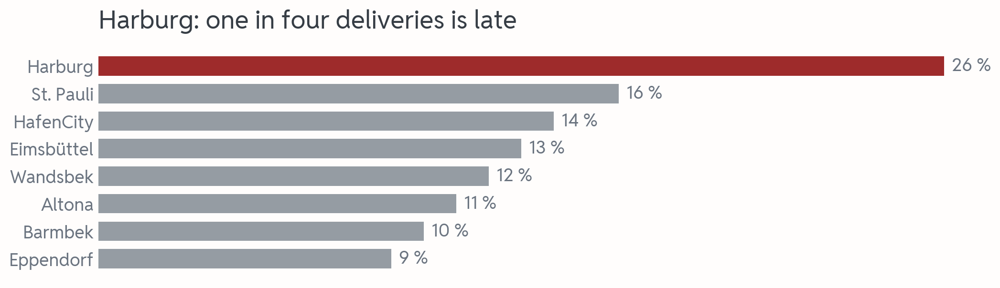
One accent for the point, the numbers on the bars instead of an axis, the claim on top. Step 1 fixed what misleads, step 2 what confuses, step 3 makes the point.
Makeover 3: who is late?
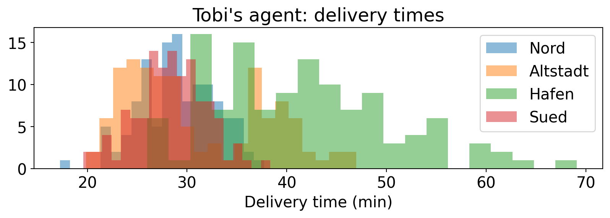
We promise 35 minutes. Which zone breaks it most often?
a) Altstadt, orange
b) Hafen, green
c) Nord, blue
Spread, step 1: one panel each
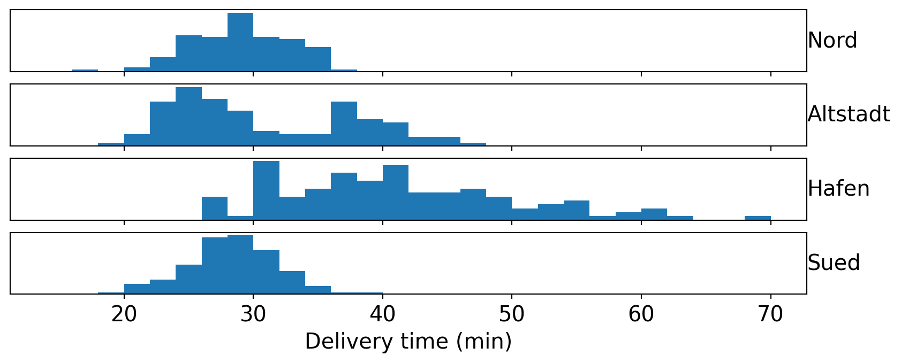
b) Hafen: three of four deliveries take longer than 35 minutes. One panel per zone shows it, and shows what the overlap hid: Altstadt has two humps, a fast group and a slow one.
Spread, step 2: boxes and dots
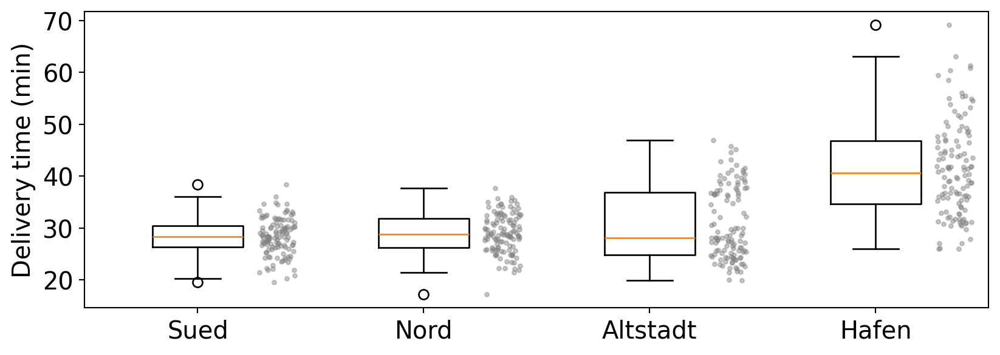
One chart instead of four: a box per zone for median and spread, every delivery as a dot beside it, from the most punctual zone to the least.
Spread, step 3: draw the promise
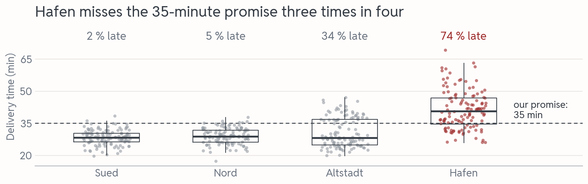
A reference line turns the chart into a test: every dot above it is a broken promise. The share on top and the title give the number.
Your turn
Open the exercise
Scan the QR or type the link:
python.tobiasvlcek.com/notebooks/ex_09_d/
Any questions? Let me know!
Charts to a story
A deck is a story
A story is facts in a specific order that create a reaction (Wilke 2019, ch. 29). A pitch in four steps:
- Opening: where we stand
- Challenge: the problem
- Action: what we did about it
- Resolution: the result, and what we ask for
Each step is one slide with one point, a figure for the generals: the room gets it in seconds.
Predict: Tobi’s four slides
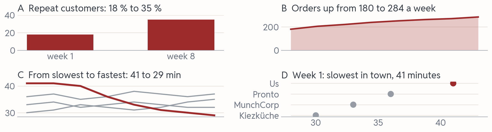
Opening, challenge, action, resolution: in which order?
a) B, D, C, A
b) A, B, D, C
c) B, C, D, A
Answer: B, D, C, A
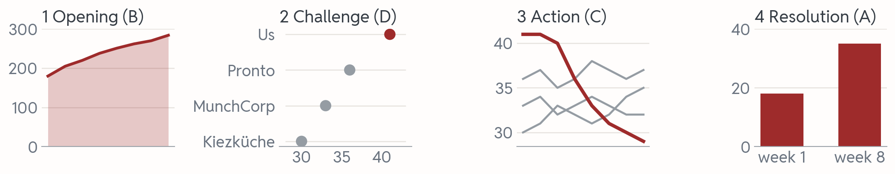
a) B, D, C, A: a growing business (B), the slowest in town (D), new routes and a line that falls below every rival (C), customers who come back (A). Then the ask: one more rider keeps it that way.
Option b) leads with the result, an arc that works too, in a newspaper. In a pitch, the problem first makes the result count.
Two rules for the whole deck
- Build up. Show our line alone before you add the rivals. A complex chart lands once the room has seen its simple version.
- Keep colors fixed. Our line is dark red on every slide. Paint us blue on slide 3 and the room reads someone else’s line as yours.
Consistent, not repetitive: same colors and same fonts across the deck, but each slide a different kind of chart, so the room notices that something new is coming.
AI as your chart assistant
- Describe data and point: “Revenue per zone from
orders(zone,total_eur), sorted bars, top zone dark red, rest grey, a title that names the leader.” - Let it draft.
- Verify before you believe the picture:
- the columns exist · the bars match your own
groupby - bars from 0 · the chart type fits · the title says no more than the picture
- the columns exist · the bars match your own
AI drafts. You decide what goes on the slide.
Three ways AI charts mislead
- Invented column names. It writes
orders["revenue"], but your column istotal_eur: the same confident nonsense you caught in Episode 8. - Defaults nobody chose. Bars in alphabetical order, one color per category, a legend, an axis cut to fit the data. Each one is a decision the agent made silently.
- Your words as the title. Ask for a chart “showing that sales are growing” and that’s the title you get, whatever the line does.
For all three: check the numbers, the axis and the title before a chart goes on a slide.
Beyond matplotlib
| Library | What it adds |
|---|---|
| seaborn | box, violin and histogram per group, in one line |
| plotly | charts you can hover over and zoom into |
| folium | street maps in the browser |
| streamlit | a script becomes a web page with sliders |
| networkx | networks of nodes and links |
Next week’s project ideas use all five. Your agent writes the code; the checks from today stay the same.
Wrap-up
Three things to remember
- Judge every chart. Wrong first (shares that add up to 115 %), then bad (the pie), ugly last. Bars start at 0; a zoomed line needs a title with the real size.
- The question picks the chart, the title states the claim. Amounts → bar, spread → histogram, two numbers → scatter, time → line.
- One point per chart, one story per deck. One accent color, names on the lines, and the slides in an order that ends in your ask.
Season finale next: git and the project kickoff. Your laptop gets git now, before the lab.
Git before the lab
Why git, why today
Next session opens with Checkpoint 5, and then your project moves to GitHub. An installer that fights you then eats the project kickoff.
So we set up git now, together. Once your setup passes the check, open the lab; I come round and look at every laptop before you leave.
Step 1: git and gh
In Zed’s terminal (Ctrl+`), steps 1 and 2 of the one-time setup on the Git Basics page:
- git: on a Mac
git --version, on Windowswinget install Git.Git - gh, the GitHub CLI: on Windows
winget install GitHub.cli, on a Mac the installer linked on the page - Then quit and reopen Zed: its terminal only finds new programs after a restart
git --version and gh --version both print a version number? Step 1 is done.
Step 2: log in, say who you are
- Login: GitHub.com, HTTPS, Yes to Authenticate Git, browser, one-time code
setup-gitlets git use that login; it prints nothing- E-mail: the one of your GitHub account, it goes on every commit
pull.rebase false: a pull combines your partners’ work with yours
The check before the lab
- a version number
- Logged in to github.com account with your username, and Git operations protocol: https
- the e-mail of your GitHub account
Open the lab as soon as all three print. I come round and check.
Stuck? Raise your hand early. Keep your phone at hand: GitHub may ask for a two-factor code, and a password you forgot since Session I is reset in two minutes. Only an iPad? Your GitHub codespace has git and gh built in: run the check in its terminal.
To the Lab
A chart in a script
The lab is a script, and a script has no cell that could show a chart. So every chart goes into a picture file:
plt.figure() # OPEN: a fresh canvas, as before
plt.plot(days, revenue)
plt.xlabel("Day")
plt.ylabel("Revenue (EUR)")
plt.title("Day 4 brings the most revenue")
daily_chart = plt.gca() # KEEP: the chart, for the lab's checks
plt.savefig("daily.png") # SAVE: the picture, into python-labs
plt.close() # CLOSE: the canvasplt.close() puts the finished canvas away; the lab checks that none is left open. To look at the picture, click daily.png in Zed’s project panel, the file list on the left.
After the check: the lab
lab_09_pitch.pyfrom Episode 9: The Pitch Deck intopython-labs- Six charts, and you pick each kind. The investor gets four of them: you choose which, and in which order
- Two things in Tobi’s deck are wrong, and no task says so: one in his numbers, one in his claims
Show me pitch_deck.png and the last block for feedback. Then practise the Checkpoint 5 hand-in once: open ex_09_d, Cmd/Ctrl+S, menu → Download → Download Python code.
Literature
Books to start with
Both are free online. For this session, start with chapters 1, 17 and 29 of Wilke (2019).
Building charts with AI? Revisit the AI Tools page: describe-then-verify is the whole workflow. Matplotlib’s own pyplot tutorial is a friendly next step.
For more, see the literature list of this course.
Lecture IX - Data Visualization | Dr. Tobias Vlćek | Home